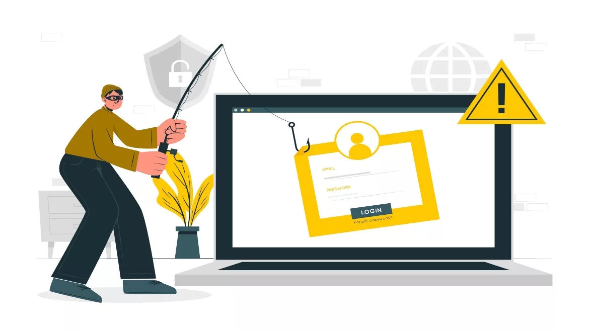
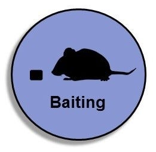
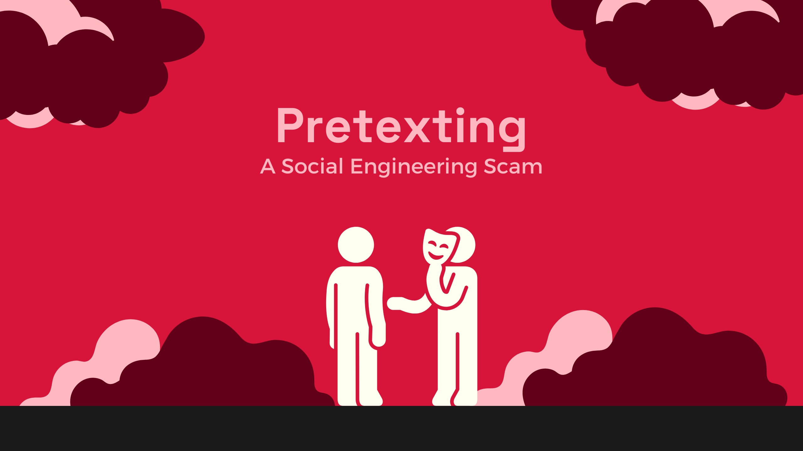
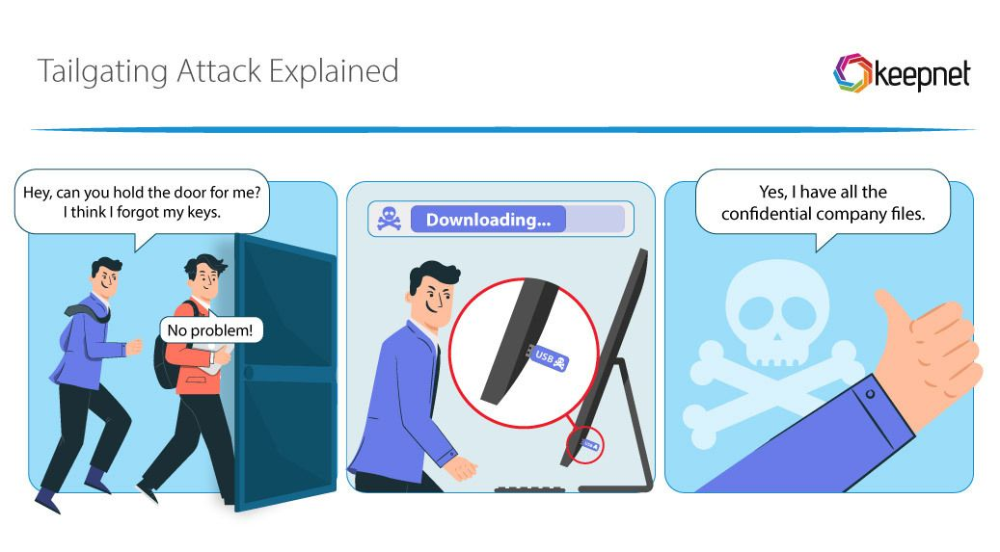
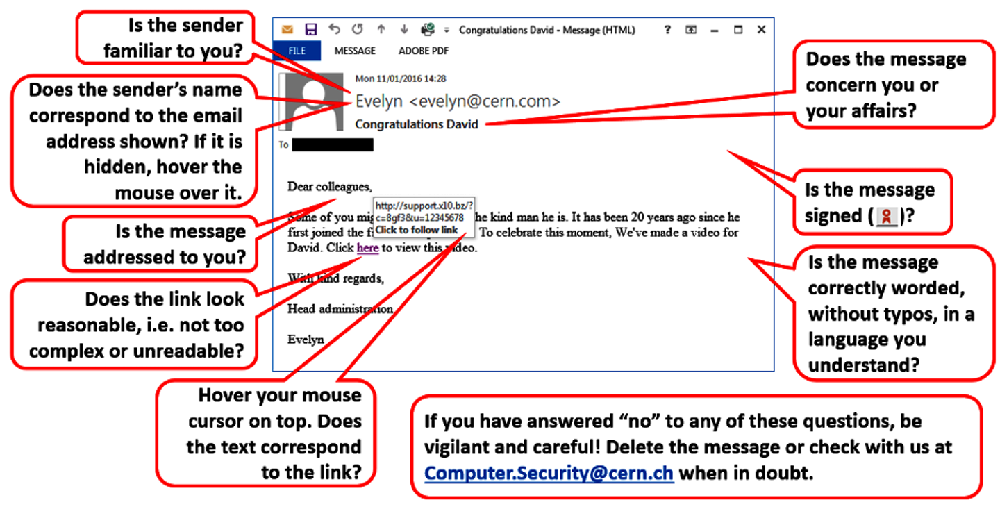

1. Phishing
Attackers send fake emails or messages that look real, asking users to click on a link or provide info. These often mimic banks, social media, or official sites.
2. Baiting
Offering something attractive (like free music, movies, or USB drives) to trick users into downloading malware or giving information.
3. Pretexting
The attacker creates a fake identity and story to get confidential data. For example, pretending to be an IT support person and asking for login details.
4. Tailgating
When an attacker physically follows an authorized person into a restricted area without proper access — e.g., entering an office behind an employee using access card.
How to Identify Suspicious Links and Messages
Suspicious links often appear very similar to genuine ones but may have small spelling changes or unusual domain names. Messages asking for urgent actions, personal info, or containing strange attachments are suspicious.
- Hover over links to see the actual URL before clicking.
- Avoid clicking shortened URLs (like bit.ly) — use URL expanders.
- Do not open links from unknown senders.
- Check for poor grammar or spelling mistakes in messages.
- Confirm the sender's identity before replying or taking any action.